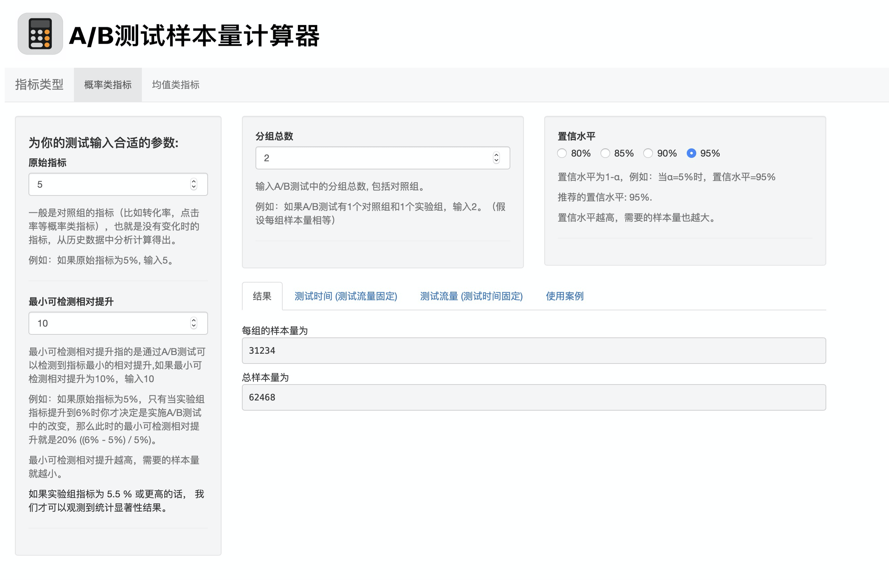
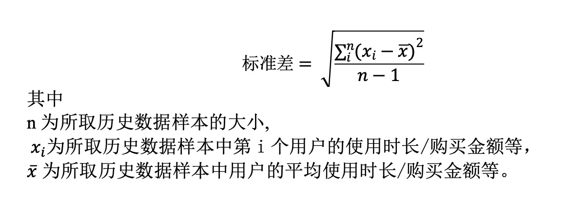
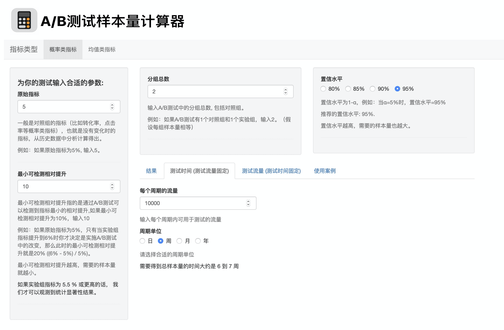
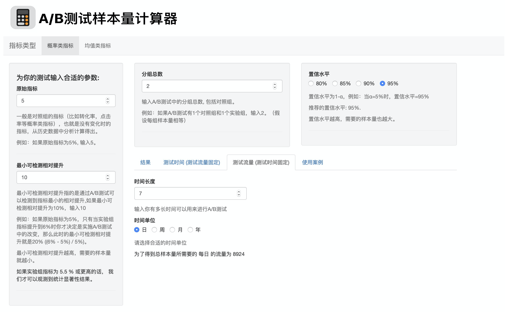
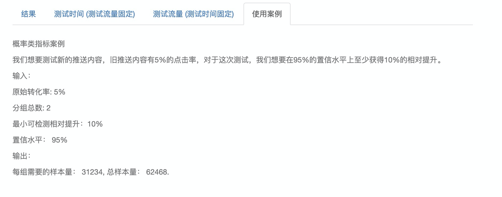
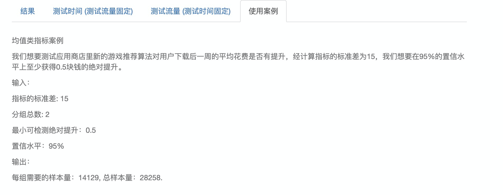
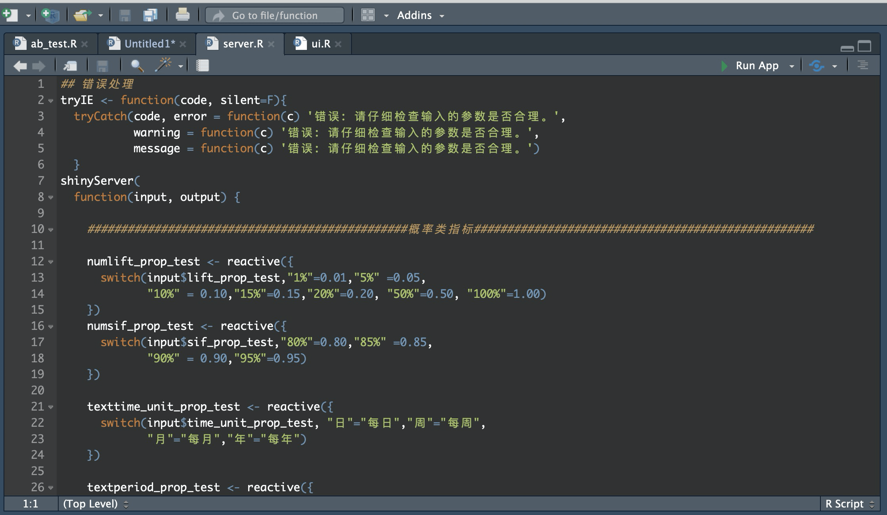

- 00 开篇词 用好A_B测试，你得这么学.md.html
- 01 统计基础（上）：系统掌握指标的统计属性.md.html
- 02 统计基础（下）：深入理解A_B测试中的假设检验.md.html
- 04 确定指标：指标这么多，到底如何来选择？.md.html
- 05 选取实验单位：什么样的实验单位是合适的？.md.html
- 06 选择实验样本量：样本量越多越好吗？.md.html
- 07 分析测试结果：你得到的测试结果真的靠谱吗？.md.html
- 08 案例串讲：从0开始，搭建一个规范的A_B测试框架.md.html
- 09 测试结果不显著，要怎么改善？.md.html
- 10 常见误区及解决方法（上）：多重检验问题和学习效应.md.html
- 11 常见误区及解决方法（下）：辛普森悖论和实验组_对照组的独立性.md.html
- 12 什么情况下不适合做A_B测试？.md.html
- 13 融会贯通：A_B测试面试必知必会（上）.md.html
- 14 举一反三：A_B测试面试必知必会（下）.md.html
- 15 用R_Shiny，教你制作一个样本量计算器.md.html
- 加餐 试验意识改变决策模式，推动业务增长.md.html
- 导读 科学、规范的A_B测试流程，是什么样的？.md.html
- 结束语 实践是检验真理的唯一标准.md.html
- 捐赠
15 用R_Shiny，教你制作一个样本量计算器
你好，我是博伟。
A/B测试前的样本量计算是设计实验时不可或缺的一步。在第6节讲样本量计算时，我提到了现在网上的样本量计算器参差不齐的问题，并且网上大部分的计算器都是只能计算概率类指标，不能计算均值类指标，在实际业务应用时十分局限。
鉴于这些问题，加上我在实践中也想要更加快速且正确地计算样本量，提高工作效率，于是就从统计理论出发，去钻研A/B测试样本量计算的原理，让自己能够识别和掌握正确的计算方法。
后来渐渐发现身边的同事和朋友在做A/B测试时也有这方面的需求，于是我就把样本量的计算方法工具化，做成App放在了网上。
所以我今天教你的，就是把样本量计算工具化的详细过程——我会带你制作一个可以发布在网上的实时计算的A/B测试样本量计算器。
实战指南
既然是制作App，我们还是需要进行一些简单的编程，包括前端和后端，使用R语言及其前端库Shiny。不过你也不用担心，制作这款App不需要你掌握前端的JavaScript、HTML、CSS，也不需要你会在后端如何搭建数据库。你只需要掌握以下3点就足够了。
A/B测试样本量计算的原理。关于原理，重点学习咱们这门课”统计篇”的两节课和基础篇的第6节课即可。
最基本的编程知识。我指的是通用的编程，不细指特定的语言。包括变量赋值、基本的数据类型（字符串，数字等），这些最基础的编程知识，即使不是专业的编程人员，也是大部分互联网从业者都会知道和掌握的，难度不大。
R和Shiny的基本语法。如果你对R和Shiny很熟悉的话，那就可以直接跳过这一点。如果你之前没有接触过R和Shiny，也没关系，这些语法也是可以快速学习和掌握的。我在这里给你一些拓展资料供你参考学习。
- 如何安装R和Rstudio
- R的基本语法（只需看R Tutorial这部分即可）
- Shiny教程
如果你没有时间和精力学习R和Shiny的知识，也别担心，我会把我的代码开源贴出来，你可以结合代码和本节课的内容学习理解。
相信如果你是跟我从头开始认真学习这门课的话，现在你肯定已经掌握了第一点：A/B测试样本量计算的原理。至于第二点：最基本的编程知识，相信作为互联网人的你已经掌握或者有概念性的认知了。那么我们今天就重点讲解下如何把这两点结合起来，制作一个简单方便的样本量计算器，在教你制作的同时呢，我也会穿插讲解R和Shiny的相关知识，还有一些实战案例。
在讲解前呢，我先把我的代码库和样本量计算器贴出来，供作参考：
首先，如果你点开GitHub上的代码库就会发现，主要的文件有两个：server.R和ui.R。这是Shiny App的标准文件结构，其实从文件名就能看出它们大概的功能：
- server.R负责后端逻辑的文件，比如我们这次的样本量计算的逻辑都在server.R当中。
- ui.R负责前端用户交互界面的，你的App做得好不好看全靠它了。
接着，你点开我贴出来的样本量计算器链接就会发现，它已经按照指标类型分成了概率类和均值类：
那么我今天就按照这两类指标来分别进行讲解。
制作过程
概率类指标
从概率类指标的样本量计算的逻辑（参看第6节课）上来看，我们需要函数：power.prop.test。下面这段代码（L31-35）是在server.R文件中的具体实施：
number_prop_test <-reactive({ceiling(power.prop.test(
p1=input$avgRR_prop_test/100,
p2=input$avgRR_prop_test/100*(1+input$lift_prop_test/100),
sig.level=1-numsif_prop_test(),
power=0.8)[[1]])
})
函数的输入参数这里，我们需要输入以下四项信息：
- 两组的指标p1和p2。
- 显著水平sig.level。
- Power。
- 单双尾检验。
我们来对照实际的前端交互界面来看下应该怎么输入：- 
两组的指标p1和p2
在这里，我会让用户输入原始指标，也就是p1，和最小可检测提升。注意这里的“提升”是相对提升=（p2-p1）/p1，而不是绝对提升=p2-p1（注意和均值类指标的绝对提升进行区别）。通过这两个参数就可以算出p2了。
这是根据我平时实践中的实际使用情况来设置的，因为一般是有原始指标和想要获得的提升，当然你也可以根据自己的需求直接让用户输入p1和p2。
显著水平sig.level
在这里，我会让用户输入置信水平（1-α），而不是显著水平α，这也是根据实践中的习惯调整的。
Power和单双尾检验
我把Power和单双尾检验都设定成了默认值，是不需要用户改变的。因为很多用我制作的计算器的用户，他们的统计背景并不强，所以我就把Power隐藏了起来，并且设定为默认的80%，这样就可以减少他们的困惑。
至于单双尾检验，我在第2节课中也讲了，A/B测试中更推荐使用双尾检验，所以我也把它设定为默认的双尾检验（从代码可以看到并没有涉及这个参数，那是因为函数本身对这个参数的默认值就为“two.sided”，即“双尾”）。
如果你还记得第6节讲的样本量计算公式的话，就会知道影响样本量的因素有显著水平α、Power、两组间的差值δ和两组的综合方差\(\\sigma\_{\\text {pooled}}^{2}\)。
你可能会有疑问：为什么不让用户直接输入以上4个影响因素呢，而是让用户输入现在交互界面上的参数呢？
这其实是在帮用户省事，通过在实践中最常出现的参数，来帮助用户计算综合方差。
通过把函数的输入参数和这些影响因素对比之后，你就会发现，其实通过函数的输入参数完全可以确定这4个影响因素，从而求得样本量。
输入完这四项信息之后，就可以开始运行了。
如果你仔细比较server.R和ui.R这两个文件，就会发现整个App中两个文件通过以下方式运行的：
- 整个App是通过ui.R这个文件接收到用户的输入值，然后把这些输入值存到input函数中。
- 接着呢，server.R再读取input，进行计算，再把结果存储到output函数中，返回给ui.R。
- 最后ui.R再把这些结果显示在用户的交互界面上。
这里再来举个例子说明下我刚才讲的整个过程。
首先，在ui.R中我们需要用户输入原始指标avgRR_prop_test（L11-12）：
numericInput("avgRR_prop_test", label = "原始指标", value = 5, min = 0, step=1)
最小可检测相对提升lift_prop_test（L18-19）：
numericInput("lift_prop_test", label = "最小可检测相对提升", value = 5,min = 0, step=1)
置信水平sif_prop_test（L42-44）:
radioButtons("sif_prop_test", label = "置信水平",
choices = list("80%","85%","90%","95%"),
selected = "95%",inline=T)
那么这些用户输入的参数呢，最后都通过input这个函数，传递到server.R文件当中去进行样本量计算（L31-35）：
number_prop_test <-reactive({ceiling(power.prop.test(p1=input$avgRR_prop_test/100,
p2=input$avgRR_prop_test/100*(1+input$lift_prop_test/100),
sig.level=1-numsif_prop_test(),
power=0.8)[[1]])
})
当计算完成后，再把结果存在output函数中（L44-51）：
output$resulttext1_prop_test <- renderText({
"每组的样本量为 "
})
output$resultvalue1_prop_test<-renderText({
tryIE(number_prop_test())
})
最后output函数再把结果传递给ui.R供前端显示（L57-63）：
tabPanel("结果",
br(),
textOutput("resulttext1_prop_test"),
verbatimTextOutput("resultvalue1_prop_test"),
textOutput("resulttext2_prop_test"),
verbatimTextOutput("resultvalue2_prop_test")
)
这里要注意的一点是，因为通过power.prop.test函数计算出来的样本量是单组的，如果需要求总样本量时，就要用单组样本量乘上分组数量。这里的分组数量也是需要用户手动输入的。
同时你可能也注意到了，我在这款App中加入了大量的解释性语言，对于每个需要用户输入的参数都进行了解释说明，这样做其实也是吸取了实践中的用户反馈。就像我刚才说的，很多用户的统计背景并不强，对于这些统计量并不熟悉，所以我们要尽可能地将这些输入参数解释清楚，减少用户使用时的困惑。
均值类指标
从均值类指标的样本量计算的逻辑上（参看第6节课）来看，我们需要函数：power.t.test。下面这段代码（L105-109）是在server.R文件中的具体实施：
number_t_test <-
reactive({ceiling(power.t.test(delta=input$lift_t_test,
sd=input$sd_t_test,
sig.level=1-numsif_t_test(),
power=0.8)[[1]])
})
从这段代码我们会发现，和概率类指标相比，函数要求的输入参数有所变化，变成了：
- 标准差sd。
- 最小可检测差值delta（这里是两组指标的绝对差值）。
- 显著水平sig.level。
- Power。
- 还有单双尾检验。
这是因为均值类指标的标准差（方差）并不能仅仅通过两组指标的值来计算，而是需要知道每个数据点来计算。
我们先看标准差的计算公式：- - 所以标准差需要用户根据以上公式在数据中计算得出。
最小可检测差值delta是用户根据实际业务情况自定的，显著水平一般为95%。
Power和单双尾检验这两项我们还沿用概率类指标的设定去设置默认值：Power为80%的双尾检测。
均值类指标代码的其他部分和概率类指标均类似，这里就不再展开举例了，具体的内容，代码里也写得十分清楚了。
应用场景和使用案例
实践中使用样本量计算的应用场景主要分两类：
- 已知单位时间的流量，求测试时间。
- 已知测试时间，求单位时间的流量。
所以，你会发现在App交互界面右下角区域的结果板块，就有关于测试时间和测试流量的选项。
下面我来举一个例子来分别说明这两种情况。
假设我们现在做A/B测试的指标为下载率，原始指标为5%，最小可检测的相对提升为10%，置信水平为95%，一共有一个实验组和一个对照组，通过咱们的样本量计算器，求得的每组样本量为31234，总样本量为62468。
在单位时间测试可用流量固定的情况下，求测试时间
这种场景是比较常见的。我们假设以周为单位，每周可用的测试流量约为10000。输入参数后，计算得出一共需要6到7周的时间才能达到充足的样本量：

在测试时间固定的情况下，求单位时间内的流量
这种场景适用于时间紧急的情况，比如一周之内要出结果，一周有7天，那么输入参数后，计算得出我们每天的测试流量至少要有8924。
知道每天需要的流量后，我们就可以根据这个数字去调整我们的测试流量占总流量的比例了。

最后我要说明一点，虽然我举的是一个概率类指标的例子，但这两个使用场景对于均值类指标是同样适用的。
使用案例
在使用案例这个版块，我会针对概率类指标和均值类指标各举一个例子，来说明具体情况下应该如何输入不同的参数。
先看概率类指标的案例。

再看均值类指标的案例。- 
如何把Shiny App发布在网上
现在我们完成了server.R和ui.R，在下图中点击右上角的“Run App”即可在本地打开我们的App。- - 但是如果你想把App发布在网上，还是得借助ShinyApps.io，它是专门发布 Shiny App的平台，你需要在上面注册一个免费账户，具体过程呢也不难，你可以查看这里的教程。
小结
那么到这里呢，关于制作A/B测试样本量计算器的讲解就结束了，相信你通过本节课的学习，结合着我提供的代码和App，已经能成功制作出自己的样本量计算器啦。
不过有一点也需要再说明一下。虽然样本量计算的逻辑是固定的，但是对于用户交互前端的话，在保证基本功能的前提下，你可以根据自己的喜好来设计的，这里我贴出来Shiny前端的案例集和常用语句供你参考。
思考题
其实样本量计算可以在各种编程语言中实施，这里我选用R和Shiny的原因是，它们使用起来相对简单些。那如果让你用Python来实施的话，对于概率类和均值类指标样本量的计算，你会选择哪些函数呢？
如果你在制作样本量计算器的过程中有遇到什么问题，或者有什么经验，欢迎在留言区和我分享，也欢迎你把课程分享给你的朋友、同事。
© 2019 - 2023 Liangliang Lee. Powered by gin and hexo-theme-book.